あなたの作品は、
あなたの手元に残るか？
作品を JSON 1枚（設計図）で保存する個人仕様です。サービスが終わっても、作品はあなたの手元に残る。
作品の設計図をつくる（無料・ブラウザ内） → 実作品を聴く・観る
保存先はあなたのPC。送信なし。
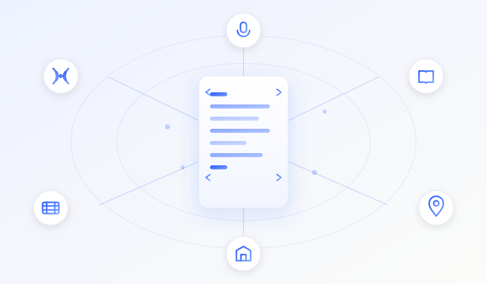
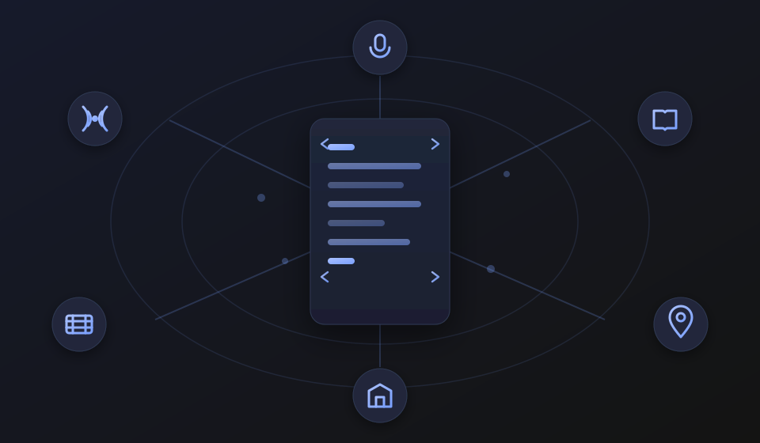
作者本人が7作品で実運用中・MIT 公開・個人仕様（外部採用 0 件）
現在の位置づけ（正直に）— 個人仕様・外部採用 0 件
これは作者1人の制作物に使っている個人仕様です。MIT で公開し、誰でも使えますが、外部採用はまだ 0 件（2026-11-11 時点）。既存標準（C2PA・schema.org・MusicXML・OpenTimelineIO 等）を置き換えるものではなく、それらへ変換するハブを目指しています。標準を名乗るのは外部採用が出てから、という方針です。
ブラウザだけで、今すぐ 1 作品を残す
コマンド不要。タイトルと作者を入れるだけで、正しい JSON（設計図）ができます。ダウンロードして、音源と同じフォルダに置けば完成です。
※ 16 種類のうち、ここでブラウザ生成できるのは主要 8 種類です（残りはひな形から）。
できあがるもの：作品の設計図（JSON）1 枚。音源や画像と同じフォルダに保存すれば、サービスが終わっても作品はあなたの手元に残ります（Git にコミットすれば履歴も残せます）。
選ぶと、指紋（SHA-256）をこのブラウザ内で計算して JSON に入れます。ファイルはどこにも送信しません。
id=作品の一意な名前 / kind=種類 / renditions=本体ファイルと指紋 / provenance=作り方の履歴 / license=再利用の条件
もっと楽に：手持ちのファイルをまとめて作品にしたいときは 一括インポート、作った JSON が本物かを確かめたいときは 検証ツール を使えます。
フォーマット（16 種類）
すべて core/envelope/v1.json を継承します。同じ道具（検証・ハッシュ・署名・レンダリング）が、ぜんぶの作品にそのまま効きます。
本物の作品 — その場で聴けます・観られます
この仕組みで作った実作品。実ファイルの SHA-256 は JSON の renditions[].sha256 と一致します（詳細は works/）。
実測ログ（2026-11-10）: 7 作品とも of.py verify → content_hash_match: true。うち本体ファイルを持つ 5 作品は renditions[].ok: true、記事と端末の 2 作品は本体ファイルを持たないため renditions は空です（解説動画 mp4 = 82915572…、画像 png = 54b83b15…）。
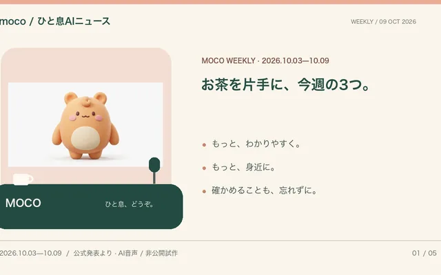
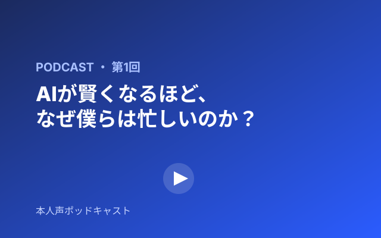
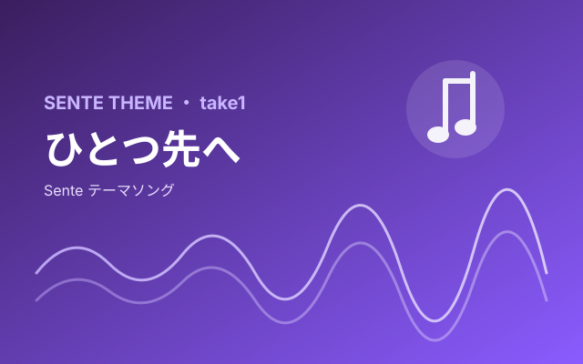
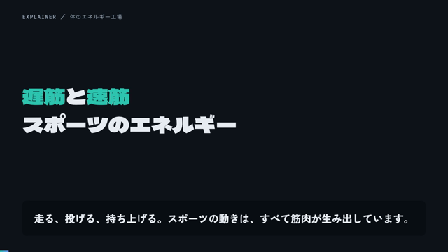
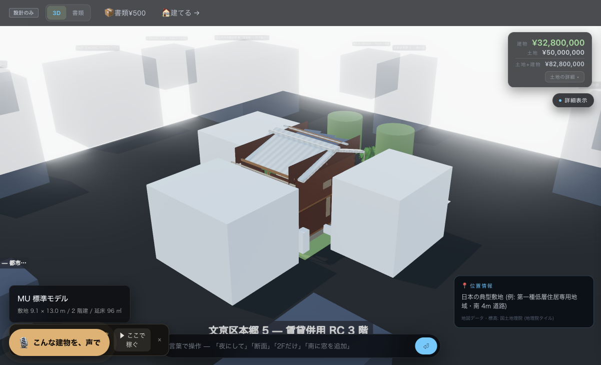

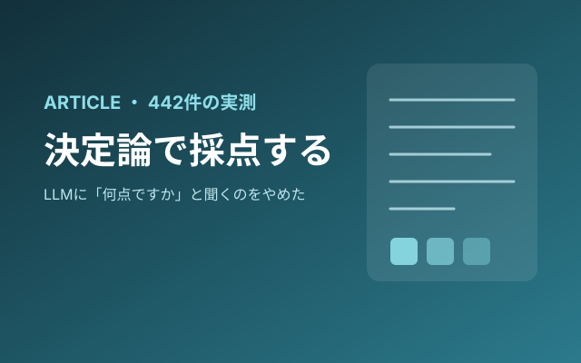
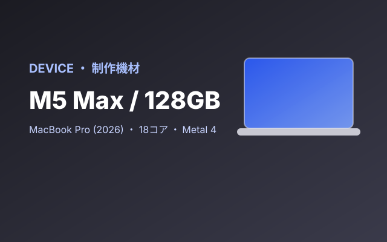
自分の作品を残す（コピーして 3 ステップ）
コマンドが苦手なら、まず上の ブラウザで作る だけで完成します。ターミナルで自動化したい人向けの手順はこちら。
ターミナルでの手順を開く（コピーして 3 ステップ）
# 1. ひな形をコピー（署名なし・renditions 付きの starter を使う）
cp templates/starter.music.json my-song.music.json
# 2. 音源を JSON と同じフォルダに置き、title / id / renditions[].path を自分のものに書き換え
# （例: "path": "my-song.mp3"）
# 3. 指紋を計算して書き込み、本物か検証する（renditions の sha256 も自動で入る）
python3 tools/of.py hash my-song.music.json --write
python3 tools/of.py verify my-song.music.jsonこれだけで、あなたの作品は「JSON（設計図）」と「音源（本体）」の 2 層で、あなたの Git に残ります。verify が ok: true なら、音源と JSON の指紋が一致しています。
※ ひな形は sha256 が空なので、validate は hash --write の後に実行してください。
git clone https://github.com/yukihamada/openformats
cd openformats
python3 -m venv .venv && .venv/bin/pip install jsonschema
.venv/bin/python tools/validate.py --allGit が苦手なら、GitHub の自分のリポジトリ画面に、ダウンロードした JSON と本体ファイルをそのままドラッグ＆ドロップするだけでも残せます。
既存標準へ書き出したいときは python3 tools/export.py schema.org <file>（JSON-LD）と python3 tools/export.py c2pa <file>（C2PA マニフェスト JSON）に変換できます（どちらも実装済み）。C2PA はマニフェスト JSON の書き出しまでで、バイナリへの埋め込み（JUMBF/COSE 署名）は未実装です。MusicXML・OpenTimelineIO・EPUB への書き出しも未実装です。
作っているのは 濱田優貴（@yukihamada） です。仕様も実装も GitHub で公開しています。
よくある質問
GitHub が終わったら、作品はどうなりますか？
JSON と本体ファイルはあなたの手元（ローカルや他の Git ホスト）にそのまま残ります。特定のサービスに依存しないので、別の場所へコピーするだけで続けられます。
無料で使えますか？
はい。仕様（SPEC）もツールも MIT ライセンスで、無料です。有料のサービスに登録する必要はありません。
JSON を書くのが面倒です。
上の「JSON を作る」フォームに入力するだけで、正しい JSON をその場で作れます。ファイルは送信されず、ブラウザ内だけで完結します。
この JSON を使うプロダクト （主要 13 / 全 89 件）
各フォーマット（kind）を実際に生成・消費するサービスだけを掲載（products/ に 89 件のカタログ全件、ここは主要 13 件）。
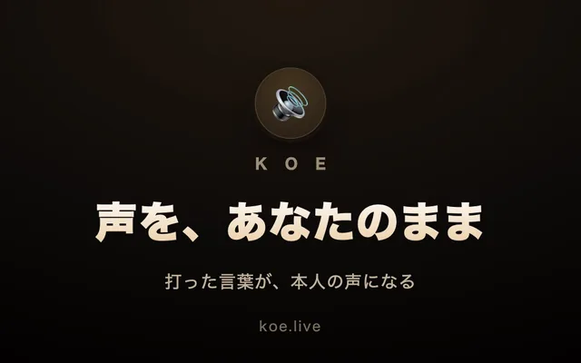
KOE
voiceuta.live
voice/musicbim.house
bimZUMEN.HOUSE
bim/landKATA.HOUSE
bim/land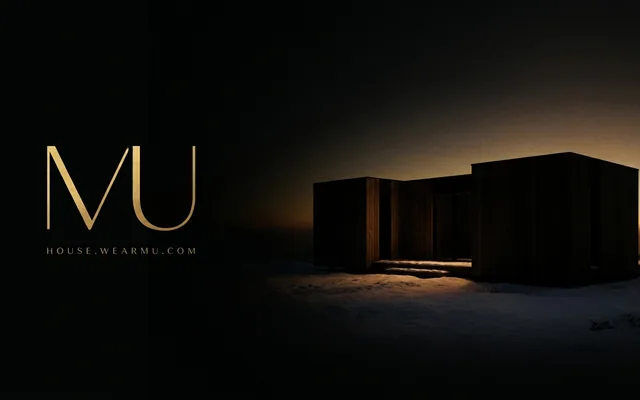
MU HOUSE
bim/land/placeSOLUNA
land/placeStayFlow
place/event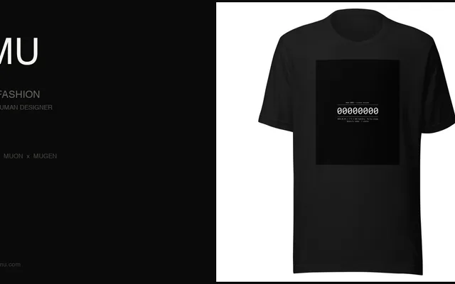
MU
image/collection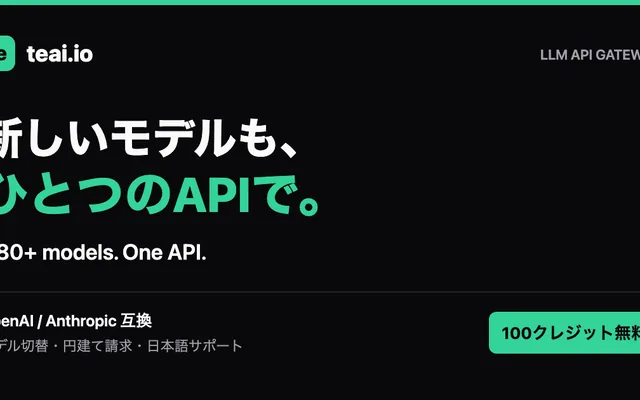
teai
article/book先手 / Sente
article/book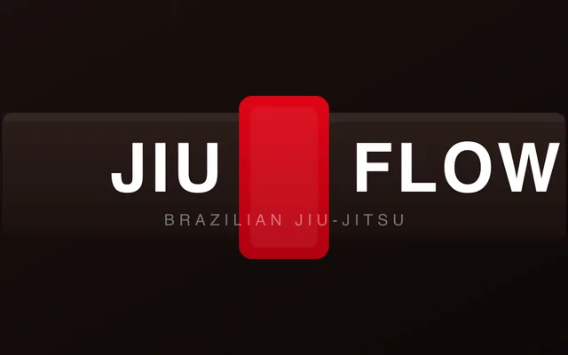
JiuFlow
article/event焚き火 / ATSM
article/event既存標準との関係
openformats は既存標準を置き換えず、それらへのハブを目指します。「標準」を名乗るのは外部採用が出てから、という方針です（規範は SPEC.md §9）。
tools/export.py schema.org で JSON-LD へ）。content_hash／hash_chain／Ed25519 で JSON 内でも行う。実装済み（tools/export.py c2pa で C2PA マニフェスト JSON へ書き出し。バイナリ埋め込み JUMBF/COSE は未実装）。むずかしい用語が多いと感じたら、ここは読み飛ばして構いません。要点は「既存の共通形式へ変換して橋渡しする」ことだけです。実装済みの変換は schema.org と C2PA の2種です（python3 tools/export.py --list で確認できます）。実装したものから順に「実装済み」と明記します。
作品 JSON を schema.org / C2PA へ変換。逆変換も。ファイルは送信しません。
作った作品が本物か確かめたいときは 検証ツール（指紋・署名・履歴をブラウザで照合）。